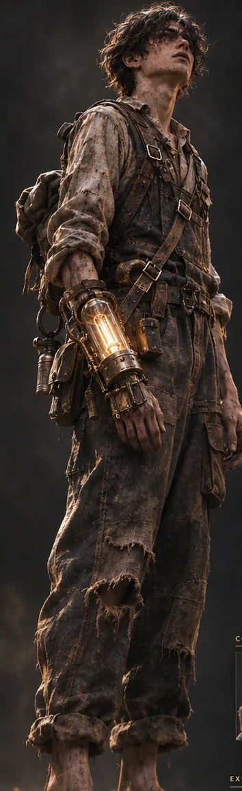

EVEN THE DARK
REMEMBERS
THE LIGHT.
A city rebuilt from war. A boy guided by a single light. And a journey through a world that feels strangely familiar.
There are things
worse than the dark.
Decades of war left a sprawling city fractured by class, memory, and loss. In its ruins, an 18-year-old survivor wakes into a nightmare with one familiar comfort: a light that refuses to leave him.
FILAMENT combines intimate psychological horror, exploration, analog machinery, and survival built around light and moths.
DISCOVER THE STORY FILES ↗A beautiful city.
A broken soul.
Travel from lantern-lit canals to impossible towers rising above the fog, then descend beneath the sea.

He was never
truly alone.
Gaunt, exhausted, and carrying more than he understands, the unnamed boy survives through ingenuity, endurance, and an impossible bond with light.
Not all weapons
are made to kill.
Every lumen costs effort. Every moth can become ammunition, medicine, or a small act of kindness.
KEEP THE LIGHT ALIVE
Hand-cranked electricity, fragile bulbs and protected pockets of light.
DISCOVER SYSTEM ↗02 / RESOURCEFOLLOW THE MOTHS
Living companions that become healing, ammunition, and eventually help.
DISCOVER SYSTEM ↗03 / SURVIVALENDURE THE UNKNOWN
Careful exploration, scarce resources and fear that grows from sound and silence.
DISCOVER SYSTEM ↗THE STORY
IS WAITING.
Explore the design files, environments, creatures and the systems at the heart of FILAMENT.
ENTER THE ARCHIVE ↗